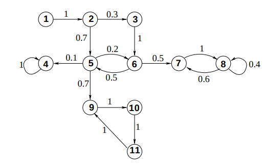

Games, graphs, and machines
MATH2301, Semester 2, 2024
These are the course materials for MATH2301 Games, graphs, and machines as taught at the ANU in 2024.
1. Wattle material
1.1. Class activities
1.1.1. Videos and reading
- Week 1
- Videos
- Sets, Functions, Relations
- Reading
- Some foundations
- Week 2
- Videos
- Equivalence relations, Modular arithmetic
- Reading
- Equivalence relations
- Week 3
- Videos
- Partial orders (2 videos)
- Reading
- Partial orders
- Week 4
- Videos
- Graphs and adjacency matrices, matrices
- Reading
- Graphs (Overview, Why graphs?, Questions about graphs, Adjacency matrix, Matrix products, Counting paths using the adjacency matrix).
- Week 5
- Videos
- Paths: counting and existence, Shortest paths
- Reading
- Graphs (Existence of paths using boolean arithmetic, shortest paths using min-plus arithmetic).
- Week 6
- Videos
- Markov chains, Computing large powers
- Reading
- Graphs (Markov chains, Computing large powers)
- Week 7
- Videos
- Alphabets, strings, and languages; Regular expressions; Deterministic finite automata
- Reading
- Regular expressions and finite automata (Introduction, Regular expressions, Deterministic finite automata)
- Week 8
- Videos
- NFAs, NFA to DFA, Regexp to NFA
- Reading
- Regular expressions and finite automata (Nondeterministic finite automata, NFA to DFA, Regular expressions to finite automata)
- Week 9
- Videos
- NFA to Regex, Pumping lemma.
- Reading
- Regular expressions and finite automata (Converting finite automata to regular expressions, Non regular languages)
- Week 10
- Videos
- Games, Winning strategies
- Reading
- Combinatorial games (introduction, Strategic labelling, beginning of Nim)
- Week 11
- Videos
- Nim and nim sum, stable equivalence
- Reading
- Combinatorial games (Nim, Game sum, Stable equivalence)
- Week 12
- Videos
- Grundy labeling: what?, Grundy labeling: why?
- Reading
- Combinatorial games (Grundy labeling)
1.1.2. Lecture times and locations
Please remember that class begins 5 minutes after the hour and ends 5 minutes before the hour. Regular attendance is strongly encouraged.
| Lecture | Time | Location |
|---|---|---|
| Lecture A | Tue, 12pm-1pm | LH Theatre, Leonard Huxley Building #56 |
| Lecture B | Wed, 12pm-1pm | Room G01, Melville Hall, Building #12 |
| Lecture C | Fri, 10am-11am | LH Theatre, Leonard Huxley Building #56 |
1.1.3. Pre-Lecture videos
Every week, I will upload short videos that summarise the basic concepts to be covered in that week. It is important that you watch these videos before coming to the lecture. The lecture will build on the material presented in the videos.
1.1.4. Office hours
I will have two in-person office hours per week.
1.1.5. Workshops
Sign up for workshops using MyTimetable. The workshops will be one hour long, but the demonstrators will be available for half an hour after the workshop for consultation.
| Worpshop | Time | Location |
|---|---|---|
| Workshop 1 | Mon, 10:30am-11:30am | Marie Reay 4.02 |
| Workshop 2 | Wed, 9:30am-10:30am | Hanna Neumann 1.58 |
| Workshop 3 | Wed, 3:30pm-4:30pm | Hanna Neumann 1.57 |
| Workshop 4 | Fri, 8am-9am | Hanna Neumann 1.58 |
Worksheets will be uploaded to Wattle sometime during the week before the workshops. You will get the most out of workshops if you read and attempt the problems in the worksheet independently for at least an hour before each workshop (or until you finish them).
1.1.6. Discussion forum (Zulip)
The discussion forum for the course will be hosted on Zulip. This will be used for introductions, questions, and informal course discussion. You are highly encouraged to join and participate in class discussions on Zulip!
If you want to ask me a direct question, I am much more likely to respond quickly if you use Zulip rather than my ANU email address.
Note that all important announcements will also be posted on Wattle.
- Signing up
Sign up by clicking on the following link: https://ggm2024.zulipchat.com/join/3np37wclhpfwfzb73e6heqx2/. You will only be allowed to sign in via your ANU email address.
- Using Zulip productively
Conversations in Zulip are organised into topics, and each topic belongs to a “channel”. You can navigate to topics from the left-hand menu, or search from the search bar at the top. We will have the following channels.
#maths-questions- for any mathematical questions.
#admin-questions- for any questions about class admin, notes/video uploads, scheduling, etc.
#announcements- for announcements. Only class staff will be able to post to this channel. Important announcements will always be on Wattle as well. I recommend that you subscribe to email notifications for this channel.
#general- for everything else.
Zulip has desktop and mobile apps (see https://zulip.com/apps/), so you can choose how to interact with it. You can also sign up to receive email notifications to messages, and replying to those emails will also automatically post the replies to Zulip.
You can get started by briefly introducing yourself in the
introductionstopic under the#generalchannel. I have already written an introduction there. - Other notes
- You can type mathematics into Zulip! See https://zulip.com/help/format-your-message-using-markdown#latex.
- You can also do other fancy stuff. See https://zulip.com/help/format-your-message-using-markdown#message-formatting. Ask me if you need help with this.
- Ask questions on public channels whenever possible: this lets the most students benefit from the answer to the question.
- You can also send me direct messages on Zulip. I will check Zulip frequently and will probably get back to you sooner if you ask a question there rather than over email.
- Please feel very free to post questions, comments, and feedback. I hope we can have lots of interesting discussions on Zulip over the semester.
2. How to study for this course?
There is no single answer to the question “How to study _?”—everyone learns differently—but here are some strategies that are generally helpful. They are not specific to this course, and should be useful for studying mathematics in general.
2.1. Reading
I am using “reading” as a short form form “absorbing new mathematics”. It also applies to watching videos.
Read actively. Pause often to think about what you have just read. Reading maths is slow. It is closer to reading poetry than reading a novel. You need to think deeply about every sentence, and it is common for something to take a long time to sink in.
What to think while reading? If you have read a definition, pause and try to construct examples yourself. Also try to construct non-examples. After that, create even more examples and non-examples. Once you feel like you have a rich set of examples and non-examples, continue. If the text gives some examples and non-examples, read them. They will undoubtedly enrich your understanding. If you feel like you do not have a rich set of examples, ask me (or someone else).
If you have read a statement (a proposition or a theorem), pause and try to find situations where the statement applies. What does the statement say in this situation? Does it say anything surprising? Try to find other situations. Also try to find situations where the statement does not apply. Try to play devil’s advocate by finding situations where the statement is wrong. Assuming the statement is accurate, this will fail, but you will learn a lot from trying.
If you have read an explanation (a proof, for example), pause and try to find the key ideas in the explanation. Try to find a concrete example where the explanation applies, and understand it in that example. Then repeat with another example.
2.2. Testing your understanding
Use the problems you see in lectures, workshops, quizzes, and homework to test your understanding. After reading a problem, if
- you understand what exactly is being asked, and
- you can think of ways to get started,
then your understanding is good. It is not expected that you immediately see how to solve the problem. But if you are stumped, or unable to get started, then your understanding is incomplete. In this case, go back to the reading and revisit the related concepts.
Do not look at the solution to any problem without having spent sufficient time attempting it on your own. If you do so, you are wasting a problem (and problems are valuable!).
2.3. Approaching problems
It is not uncommon to feel stumped after reading a problem. One reason is that you are not familiar with the relevant ideas. But even if you are, it can be difficult to get started. Here are some strategies to get started.
Your first attempt does not have to lead to a solution. So try something and see if it leads anywhere. A failed attempt will often generate new ideas.
The problem will often involve new terminology. Break it down until you have restated it in terms you are familiar with. As you get used to the new terminology, this process will get easier.
Experiment! If the problem talks about a number \(n\), experiment by taking small values of \(n\). If it talks about a graph, try with a some small examples of graphs. If it talks about a function, test with some functions you know. This is where it helps to have a handy collection of examples.
Try to find the corresponding simplest problem. If the problem talks about a big number, try the same problem for smaller numbers. If the problem talks about all graphs, try with some small graphs.
3. Academic integrity policy
Please read the following guidelines carefully.
3.1. Academic integrity policy for assignments
While solving your assignments, you will typically work in two phases.
- The solving phase: this is when you are actually trying to find the answers to the questions.
- First, you should think about the problem on your own.
- Next, you are welcome and encouraged to collaborate with other students while you are in the solving phase. It is often by working productively with peers that you will learn the most. Collaboration means that all of you are thinking about the problem together and coming up with a solution together. You should move on to the next phase once you know more or less how to solve the problem.
- You are encouraged to go to office hour and to the MSI drop-in sessions to get clarifications.
- The write-up phase: this consists of writing up your solutions for submission, once you know more or less how to solve the problems.
- You must do this entirely by yourself. Work alone when you are writing.
- If you collaborate with anyone else, copy (parts of) solutions from someone else, copy from pictures taken of the board, or ask someone else to write your solutions, you are violating the academic integrity policy.
- If you get stuck while writing, you can go back to the previous phase to collaborate/ask questions to your instructors, but once again when you are back to writing the solution, it must be done independently.
Additionally, keep in mind the following.
- When you are writing up your solution, you must write down at the top of your solution sheet a list of your collaborators, as well as any external resources you used. It is a violation of the integrity policy if you do not acknowledge the sources from which you received help. However, you do not need to cite help received from office hour, demonstrators, or the MSI drop-in session.
- Asking someone else to give you the solutions, or paying someone else to give you the solutions, is a violation of the integrity policy. Use of websites such as Chegg, CourseHero, etc for getting assignment solutions is a violation of the integrity policy.
If you are ever unsure about whether something is or is not allowed, ask the instructor for clarification. You will never get into trouble for asking for clarification about what is acceptable. However, you will face serious consequences if you fail to follow the academic integrity policy.
4. Notes
5. Annotated lecture slides
- 2024-07-23annotated.pdf
- 2024-07-24annotated.pdf
- 2024-07-26annotated.pdf
- 2024-07-30annotated.pdf
- 2024-07-31annotated.pdf
- 2024-08-02annotated.pdf
- 2024-08-06annotated.pdf
- 2024-08-07annotated.pdf
- 2024-08-09annotated.pdf
- 2024-08-13annotated.pdf
- 2024-08-14annotated.pdf
- 2024-08-16annotated.pdf
- 2024-08-20annotated.pdf
- 2024-08-21annotated.pdf
- 2024-08-23annotated.pdf
- 2024-08-27annotated.pdf
- 2024-08-28annotated.pdf
- 2024-08-30annotated.pdf
- 2024-09-17annotated.pdf
- 2024-09-18annotated.pdf
- 2024-09-20annotated.pdf
- 2024-09-24annotated.pdf
- 2024-09-25annotated.pdf
- 2024-09-27annotated.pdf
- 2024-10-01annotated.pdf
- 2024-10-02annotated.pdf
- 2024-10-08annotated.pdf
- 2024-10-09annotated.pdf
- 2024-10-11annotated.pdf
- 2024-10-15annotated.pdf
- 2024-10-16annotated.pdf
- 2024-10-18annotated.pdf
6. Worksheets
6.1. Worksheet 1
6.1.1. Sets and set notation
- Some of the following sets are the same, and some are different. Decide and discuss.
- \(\emptyset\)
- \(\operatorname{Pow}(\emptyset)\)
- \(\emptyset \cap \operatorname{Pow}(\emptyset)\)
- \(\emptyset \cup \operatorname{Pow}(\emptyset)\)
- \(\emptyset \times \operatorname{Pow}(\emptyset)\)
- \(\operatorname{Pow}(\emptyset) \times \operatorname{Pow}(\emptyset)\)
The symbol \(\exists\) reads as “there exists”. The symbol \(\forall\) reads as “for all”. The symbols \(\mathbf{N}\), \(\mathbf{Q}\), \(\mathbf{Z}\), and \(\mathbf{R}\) denote the sets of natural numbers (including zero), rational numbers, integers, and reals respectively.
Consider the following set: \[\left\{x \in \mathbf{Q}\mid \exists y \in \mathbf{Z} \text{ such that } x = \displaystyle \frac{y}{2} + 1\right\}.\] Some of the following sets are the same as the set described above, and some are not. Decide and discuss.
- \(\displaystyle \left\{x \in \mathbf{Z} \mid \exists y \in \mathbf{Z}\text{ such that } x = \displaystyle \frac{y}{2} + 1\right\}\).
- \(\displaystyle \left\{x \in \mathbf{Q} \mid \exists y \in \mathbf{Z}\text{ such that } 2x = y \right\}\).
- \(\displaystyle \left\{x \in \mathbf{Z} \mid \forall y \in \mathbf{Q}\text{ we have } x = \displaystyle \frac{y}{2} + 1\right\}\).
- \(\displaystyle \left\{x \in \mathbf{R} \mid \exists y \in \mathbf{Z}\text{ such that } x = \displaystyle \frac{y}{2} + 1\right\}\).
6.1.2. Relations and graphs
- Give an example of a set \(S\) and a binary relation \(R \subset S \times S\) that has the listed properties.
- Symmetric but not reflexive.
- Transitive but not reflexive.
- For each kind of relation mentioned, discuss what special property the graph of the relation must satisfy.
- Reflexivity
- Symmetry
- Being the I/O relation of a function
6.2. Worksheet 2
- Consider the relation on \(\mathbb{Z}\) described by \[\{(a,b) \in \mathbb{Z} \times \mathbb{Z} \mid (a^2 - b^2)\text{ is an integer multiple of }5\}.\] Show that it is an equivalence relation, and find the equivalence classes.
- Find the smallest non-negative integer \(b\) that satisfies the following equalities, or justify why it does not exist.
The number \(d\) is the modulus.
- \([17] + [b] = [2]\) with \(d = 7\).
- \([3b] = [0]\) with \(d = 6\).
- \([3b] = [1]\) with \(d = 6\).
- Find the last digit of \(3^{101}\) (written in decimal).
Hint: In other words, identify \([3^{101}]\) among the classes \([0],[1],\dots,[9]\) modulo 10. - In class, we saw that modulo \(d\) it is possible to have \([a] [b] = 0\) but neither \([a] = 0\) nor \([b] = 0\). Prove that if \(d\) is a prime number, this does not happen. That is, if \([a] \cdot [b] = [0]\) modulo a prime number \(p\), then \([a] = [0]\) modulo \(p\) or \([b] = [0]\) modulo \(p\).
6.3. Worksheet 3
6.3.1. Hasse diagram an rank functions
- Consider the set of the names of the dwarfs from Snow White: {Bashful, Doc, Dopey, Grumpy, Happy, Sleepy, Sneezy}. Consider a partial order relation on this set, where \(x \preceq y\) if the length of \(x\) is smaller than the length of \(y\), and if \(x\) comes before \(y\) in alphabetical order. Draw the Hasse diagram of this partial order relation.
- Does the poset have maximum or minimum elements? Find all minimal and maximal elements.
- Find a rank function on the poset.
6.3.2. Locally finite posets
We say that a poset \((S, \preceq)\) is locally finite if for every \(x,y \in S\), the set \[\{z \mid x \preceq\ z \text{ and } z \preceq y\} \] is finite.
- Give an example of a poset that is not locally finite.
- Give an example of a poset that is not finite, but is locally finite.
6.3.3. The subset poset and the hypercube
Let \(A = \{1,\cdots, n\}\) and let \(A = \operatorname{Pow}(S)\). Instead of writing a subset \(T \subset A\) by listing its elements, write it as an \(n\)-tuple of \(0\)’s and \(1\)’s so that the \(i\)-th place is \(1\) if \(i \in T\) and \(0\) if \(i \not \in T\).
For example, if \(n = 3\), then the subset \(\{1,3\} \subset \{1,2,3\}\) is encoded by \((1,0,1)\).
- Describe the subset relation in terms of the corresponding \(n\)-tuples. That is, if \(T \subset T'\), what can you say about the \(n\)-tuples that encode \(T\) and \(T'\)?
- Describe when an \(n\)-tuple is an immediate successor of another \(n\)-tuple under this relation.
Take \(n = 3\). Draw the Hasse diagram in 3 dimensions by plotting the triples at the corresponding point in \(\mathbf{R}^3\). So \((0,0,0)\) is at the origin and \((1,1,1)\) is at the point \((1,1,1)\). Draw the arrows representing immediate successors (we can not drop the arrowheads because there is no clear “up” or “down”). What shape do you get?
As a warmup, do the exercise with \(n = 2\) or even \(n = 1\).
What shape would you get in higher dimensions?
- Let \(I = \{0,1\}\) with the order \(\leq\) and let \(S = I^n\), the \(n\)-fold Cartesian product \(I \times \cdots \times I\). Describe the product order on \(S\). How is it related to the order on \(n\)-tuples coming from the subset relation?
6.3.4. Existence of rank functions
Let \(S\) be a finite poset. A cycle in the Hasse diagram of \(S\) is a sequence of vertices \(s_0, \dots, s_{n}\) such that \(s_0 = s_n\) and each successive elements in the sequence are joined by an edge. That is, for each \(i\), we have an edge betwen \(s_i\) and \(s_{i+1}\) (this edge could go upward or downward).
Consider the following statement. The poset \(S\) admits a rank function if and only if every cycle in the Hasse diagram of \(S\) has the same number of upward edges as downward edges.
Is the statement true or false?
6.4. Worksheet 4
- Find a non-zero \(5 \times 5\) matrix whose square is zero.
- Let \(d = 2 \cdot 3 \cdot 5 \cdot 7 \cdot 11\).
Let \(V\) be the set of positive divisors of \(d\).
- Put an edge \(v \to w\) if \(v \neq w\) and \(v\) divides \(w\). That is, if \(w\) is a successor of \(v\) in the divisor poset, and \(v \neq w\). Let \(A\) be the adjacency matrix of the resulting graph. What is the smallest \(n\) such that \(A^n = 0\)?
- Does your answer change if we only put an edge \(v \to w\) when \(w\) is an immediate successor of \(w\)?
Consider the following graph.
Calculate for a few values of \(k\) the number of length \(k\) paths from \(a\) to itself. Can you find (and perhaps prove!) a pattern?
Consider the 3-petalled flower graph
Let \(A\) be the adjacency matrix. Describe \(A^{100}\) and \(A^{101}\).
What happens if you change the number of petals?
6.5. Worksheet 5
6.5.1. Boolean arithmetic with negative numbers
Let us see what happens with boolean arithmetic if we allow negative numbers.
Consider the equivalence relation on \(\mathbf{R}\) defined by \(a \sim b\) if both \(a\) and \(b\) are zero, or both \(a\) and \(b\) are non-zero.
- What are the equivalence classes?
- Define \(+\) and \(\cdot\) on the equivalence classes by the same rule as before: \[ [a] + [b] = [a+b] \text{ and } [a] \cdot [b] = [a \cdot b].\] Are these operations well-defined?
- What if we make 3 equivalence classes, depending on whether the number is positive, negative, or zero? Can we consistently define \(+\) and \(\cdot\)?
6.5.2. Oscillation versus stabilisation
- Construct a boolean matrix whose boolean powers oscillate with a cycle of 3. That is, we have \(A^{n} = A^{n+3}\) but \(A^n \neq A^{n+1} \neq A^{n+2}\).
- Let \(A_1, A_2, A_3, \dots\) be a sequence of boolean matrices. Assume that \(A_1 \leq A_2 \leq A_3 \leq \dots\). That is, every entry of \(A_1\) is less that or equal to the corresponding entry of \(A_2\), and so on. Prove that the sequence is eventually constant. That is, there exists an \(N\) such that \(A_N = A_{N+1} = \cdots\).
Using the result above, prove that if \(A\) is a boolean matrix, then \(I+A^2+\cdots+A^n + \cdots\) must stabilise.
In fact, if \(A_1,A_2,A_3, \dots\) is any sequence of boolean matrices, then \[ A_1 + A_2 + \cdots + A_n\] must stabilise.
We saw in the lecture that the powers of any boolean matrix \(A\) are eventually periodic. What is the period in the following two examples?
6.5.3. Min/plus powers computation
Consider the following graph, with edge weights as listed. Assume that all loops are present with weight 0 (not shown).
Use the \(\{\text{min},+\}\) matrix product to compute the minimum-weight paths of any length between any two vertices.
6.5.4. Min/plus powers stabilisation
We showed that under some hypotheses, the min/plus powers stabilise. Disregarding the hypotheses, find a graph such that the min/plus powers of its weighted adjacency matrix do not stabilise.
Can you find an example with all non-negative weights?
- Suppose all the loops have weight 0 and there are no directed cycles whose total weight is negative. Can we still conclude that the min/plus powers stabilise?
6.6. Worksheet 6
6.6.1. The Perron–Frobenius property
Let \(G\) denote a Markov chain with transition matrix \(A\).
- When does the Perron–Frobenius theorem (PFT) apply?
Give your answer in terms of
- the existence/non-existence of paths,
- powers of \(A\),
- powers of the boolean adjacency matrix \(B\).
- Construct examples of graphs \(G\) (omit the probabilities) where
- PFT applies,
- PFT does not apply,
- the graph is strongly connected and yet PFT does not apply.
6.6.2. The GCD condition
Recall that a convenient way to verify that PFT applies is:
- make sure the graph is stongly connected,
- find a vertex \(v\) and directed cycles based at \(v\) of length \(a\) and \(b\) with \(\gcd(a,b) = 1\).
- Let \(G\) be the Markov chain of snakes and ladders on a \(10 \times 10\) board where we continue from \(0\) if we go beyond 100. (So rolling a 4 at 98 takes us to \(2\)). Verify the two conditions above.
- Does your argument work if we change the size of the board? What if we change the \(6\)-sided die to an \(8\)-sided die?
6.6.3. Some Markov chains
- Let \(A\) be the transition matrix of the following Markov chain. Use PFT to find \(\lim_{n \to \infty} A^n\).
- Gregor Mendel observed a particular gene in garden peas that exists in two types: \(G\) or \(g\).
Each pea plant has a pair of genes.
So a plant could be of type \(GG\), or \(Gg = gG\), or \(gg\).
We take a plant and fertilise it with a plant of type \(Gg\) to produce an offspring.
We do the same process starting with the offspring (always mating with a \(Gg\) plant), and continue.
The offspring inherits one gene from each parent with equal probability.
So, for example, if we fertilise \(GG\) with \(Gg\), then the offspring will be \(GG\) with probability \(1/2\) and \(Gg\) with probability \(1/2\).
If we fertilise \(Gg\) with \(Gg\), the offspring will be \(GG\) with probability \(1/4\), \(Gg = gG\) with probability \(1/2\), and \(gg\) with probability \(1/4\).
- Taking \(\{GG, Gg, gg\}\) as the vertex set, describe the Markov chain.
- Decide if PFT applies.
- Write the transition matrix \(A\) and compute the first few powers. Observe the row corresponding to \(Gg\). What do you notice? Can you interpret your result? What about the other two rows?
6.6.4. Revisiting the GCD condition (if time permits)
The reason the GCD condion works is the following theorem.
Theorem: Let \(a, b\) be positive integers with \(\gcd(a,b) = 1\).
Then any \(n > ab\) can be written as a sum of \(a\)’s and \(b\)’s.
- Try to prove it for \(a = 3\) and \(b = 4\).
- Try with \(a = 3\) and \(b = 5\).
- Try with any \(a\) and \(b = a+1\).
- For the general case, let \(r\) be the remainder when \(n\) is divided by \(a\).
- If \(r = 0\), we can simply write \(n = a + a + \cdots + a\) (no \(b\)’s needed).
- If \(r \equiv b \pmod a\), what would you do?
- If \(r \equiv 2b \pmod a\), what would you do?
- If \(r \equiv 3b \pmod a\), what would you do?
- Can you generalise?
6.7. Worksheet 7
In all problems, “binary string” refers to any string or word on the alphabet \(\Sigma = \{0,1\}\). Unless otherwise specified, our alphabet is always \(\Sigma = \{0,1\}\).
For this worksheet, make sure to discuss actively with your groupmates! Coming up with regexes that match what you want them to match, as well as describing the languages of given regexes, takes a lot of practice. It is a creative process and there is a lot of room for error. But you will learn the tricks of the trade quicker if you discuss frequently with others.
6.7.1. Regular expressions
- If \(r\) is a regular expression, write down another regular expression \(s\) such that \[L(s) = \{vwx\mid v, w, x \in L(r)\}.\]
- Write down a regular expression whose language is \[\{w \in \Sigma^*\mid w \text{ is any string except }0\text{ or }1\}.\]
- Write down a regular expression \(r\) that matches exactly those binary strings which (when thought of as numbers in base 2) are divisible by \(8\). (Let us assume that we only consider a binary string to represent a valid number if it either starts with a \(1\), or if the whole string equals \(0\).)
- Let \(r = 01^*0|10^*1\). Describe \(L(r)\) in words.
- Write down a regular expression for the language that contains exactly those strings without two consecutive \(1\)s. Discuss and convince each other that you haven’t missed anything or have anything extra.
- Write down a regular expression whose language is \[\{w \in \Sigma^* \mid w\text{ has exactly two }0 \text{s and at least two }1\text{s}\}.\] Discuss and convince each other that you haven’t missed anything or have anything extra.
- For each of the problems 2, 3, and 4, try to come up with regular expressions that match precisely the strings that do not match the regular expression from the problem. You can either try to do this directly based on the descriptions of the language, or try to do it by manipulating the regular expressions. Can you find a systematic method for this?
6.7.2. DFAs
Answer the following questions about the DFA shown below.
\begin{center} \begin{tikzpicture}[node distance=2cm, >=latex] \node[state,initial, accepting] (q1) {$q_1$}; \node[state, accepting] (q2) [right of=q1]{$q_2$}; \node[state, accepting] (q3) [right of=q2]{$q_3$}; \node[state] (q4) [right of=q3] {$q_4$}; \path[->] (q1) edge[loop above] node {0} () (q2) edge[loop above] node {0} () (q3) edge[loop above] node {0} () (q4) edge[loop above] node {0,1} () (q1) edge node[above] {1} (q2) (q2) edge node[above] {1} (q3) (q3) edge node[above] {1} (q4); \end{tikzpicture} \end{center}- What is the set of states?
- What is the start state?
- What is the set of accept states?
What is the transition function? Fill in the following table.
δ 0 1 q1 q2 q3 q4 - Can you figure out a description for the language of this automaton?
- Can you write down a regular expression that recognises the same language?
6.8. Worksheet 8
6.8.1. Warm-up
- When is an NFA said to accept a string? When is an NFA said to reject a string?
- Let \(M\) be an NFA. Let \(L = L(M)\) and \(L^{c} = \Sigma^{\ast} - L\). If you take an NFA and switch all the accepting states to non-accepting states and vice-versa, will the language of the resulting machine be \(L^c\)? Why or why not?
- What happens in the calculation of an NFA if from a given state, it is not possible to read the letter we are supposed to read?
6.8.2. Problems
Consider the NFA shown below.
\begin{center} \begin{tikzpicture}[node distance=2cm, >=latex] \node[state,initial, accepting] (q1) {$q_1$}; \node[state] (q2) [below left of=q1]{$q_2$}; \node[state] (q3) [below right of=q1]{$q_3$}; \path[->] (q2) edge[loop left] node {0} () (q1) edge node[left] {1} (q2) (q1) edge[bend right] node[left] {$\varepsilon$} (q3) (q3) edge[bend right] node[left] {$0$} (q1) (q2) edge node[below] {0,1} (q3); \end{tikzpicture} \end{center}Find at least one string (ideally more!) that the NFA accepts and at least one that the NFA rejects.
- Convert the NFA into an equivalent DFA.
The next problems are about constructing machines that do certain things. Carefully convince each other why your solutions work. Some of these problems are hard, and take practice to solve. Don’t get discouraged if you can’t come up with solutions right away!
Let \(L\) be a language. Consider the following language. \[L^{del} = \{xz \mid xyz \in L\text{ where }x,z\in \Sigma^*, y \in \Sigma\}.\] Given an NFA that recognises \(L\), construct an NFA that recognises \(L^{del}\).
Hint: In your NFA, at any point once you’ve read some portion of the string, you should create the option to ignore one letter and then move on with the calculation.
Let \(L_1\) and \(L_2\) be languages. Let the perfect shuffle of \(L_1\) and \(L_2\) be the language \[L = \{w \mid w = a_1 b_1 \cdots a_k b_k, \text{ where } a_1, \dots, a_k, b_1, \dots, b_k \in \Sigma \text{ and } a_1 \cdots a_k \in L_1 \text{ and } b_1 \cdots b_k \in L_2\}.\] (The number \(k\) can be arbitrary). As a warm up to understand the construction:
- Take \(L_1 = 0^{*}\) and \(L_2 = 1^{*}\), and describe the perfect shuffle \(L\).
- Take \(L_1 = \{0,00,000\}\) and \(L_2= \{1,11,111\}\), describe the perfect shuffle \(L\).
Now, given automata \(M_1\) and \(M_2\) recognising \(L_1\) and \(L_2\), respectively, construct an automaton \(M\) to recognise \(L\). You may assume that \(M_1\) and \(M_2\) are deterministic, and construct a non-deteterministic \(M\).
Here is a series of pointers to help you come to a complete solution of this problem.
- We’ll have to somehow combine the DFAs recognising the two languages into a third one.
- We’ll need to start at the start state of \(M_1\), because we expect the first letter of any valid word to be a letter that’s valid at the start of any word in \(L_1\).
- Once we read a letter from \(L_1\), we have to “pause” and read a letter from \(L_2\) in order to be valid. But after that, we’ll have to “resume” in \(M_1\), which means we have to remember where we came from. Can you simulate this using a product-type construction?
- (∗, bonus) If you’re finished with the remainder of the worksheet, construct an automaton to recognise the shuffle of two regular languages \(L_1\) and \(L_2\), defined as follows: \[L = \{w \mid w = a_1 b_1 \cdots a_k b_k, \text{ where } a_1, \dots, a_k, b_1, \dots, b_k \in \Sigma^{*} \text{ are such that } a_1 \cdots a_k \in L_1 \text{ and } b_1 \cdots b_k \in L_2\}.\]
6.9. Worksheet 9
In all the problems, the alphabet is \(\{0,1\}\).
Show that the following languages are not regular by (a) a pumping-lemma argument and (b) using the Myhill-Nerode theorem.
It takes practice to be able to apply either of the two strategies. Do not be discouraged if you find it difficult. It is difficult!
- \(L = \{0^m 1^n \mid m \neq n\}\).
- \(L = \{0^{n} \mid n \text{ is a power of 2}\}\).
In this problem, we see how the process of going from an NFA to a DFA can produce exponential blow-up in size.
Let \(L\) be the set of strings whose \(10\)-th position is \(1\) (so the string has to be at least 10 letters long).
- Construct a DFA/NFA for \(L\). It should have about 10 states.
- Using it, construct an NFA for \(L^{\rm rev}\). Describe \(L^{\rm rev}\) in words.
- Think about converting the NFA for \(L^{\rm rev}\) to a DFA. Convince yourself that the conversion process would produce a DFA with about \(2^{10}\) states.
- Prove that a DFA for \(L^{\rm rev}\) cannot have fewer than \(2^{10}\) states. To do so, show that all strings of length \(10\) are inequivalent under the Myhill-Nerode equivalence relation \(\sim\).
- Choose your favourites among the games we discussed in class (subtraction game, chomp, hackenbush, nim), and play them in your group. Can you find winning strategies for certain cases? Once you have played a couple of rounds, try to draw some small game graphs and label them by N and P. Did you use the best strategy?
6.10. Worksheet 10
- (Warm up) Remember the rules to label states as P or N.
- If a state is a sink state (no outgoing arrows), we label it \makebox[3em]{\hrulefill}.
- If a state has an outgoing arrow to a P state, we label it \makebox[3em]{\hrulefill}.
- If all outgoing arrows of a state are N, we label it \makebox[3em]{\hrulefill}.
- (Warm up) Can there be an arrow \(N \to N\)? \(P \to P\)? \(P \to N\)? \(N \to P\)?
- Draw the game graph of \(2 \times 3\) chomp and label it with N and P.
- Remember what it means to add two games. Find two N games \(G_1\) and \(G_2\) such that \(G_1 + \operatorname{Nim}(2,3)\) and \(G_2 + \operatorname{Nim}(2,3)\) have different outcomes (N vs P).
- The game of Wyt rooks is played as follows.
We start with two rooks placed on two squares of a chessboard.
A move consists of moving one of the rooks any positive number of squares downward or leftward (but not both).
Rooks can occupy the same square and move past each other.
As usual, the player who cannot make a move loses.
- Play this game with your group and determine some winning and losing positions.
- Try to convert this game into some form of nim.
(Open-ended) Euclid’s game is defined as follows. The starting position is a pair of positive integers \((a,b)\). A move consists of subtracting a non-zero multiple of the smaller number from the larger number, ending up again with a pair of positive integers. In particular, any position of the form \((n,n)\) is a P position.
Play this game with your group and determine some other non-trivial P and N positions. Do you see a pattern? Bonus/challenge: Can you find a pattern, and who has a winning strategy?
6.11. Worksheet 11
The goal of this worksheet is to practice computing Grundy labels and using them to find winning moves.
- Consider the \(1,2\)-subtraction game starting with the initial state \(10\). Find the Grundy labels of the game states.
- Let \(G\) be the \(1,2\)-subtraction game with initial state \(10\).
- Find the Grundy label of \(G + \operatorname{Nim}(2,4,5)\), using that the Grundy label of \(G+H\) is the (xor) sum of the Grundy labels.
- Find all winning moves for the first player. Remember that a winning move puts the opponent in a \(P\)-position, which is a position with Grundy label \(0\).
Repeat (2) for combinations of games of your choice taken from all the games we have seen: nim, Chomp, poset chomp, nimble, Euclid’s game, Grundy’s game, subtraction game with different parameters, and so on.
For the exam, you are not expected to know the rules of these more esoteric games. But you should know the rules of nim, chomp, and poset chomp.
7. Assignments
7.1. Academic integrity policy for assignments
While solving your assignments, you will typically work in two phases.
- The solving phase: this is when you are actually trying to find the answers to the questions.
- First, you should think about the problem on your own.
- Next, you are welcome and encouraged to collaborate with other students while you are in the solving phase. It is often by working productively with peers that you will learn the most. Collaboration means that all of you are thinking about the problem together and coming up with a solution together. You should move on to the next phase once you know more or less how to solve the problem.
- You are encouraged to go to office hour and to the MSI drop-in sessions to get clarifications.
- The write-up phase: this consists of writing up your solutions for submission, once you know more or less how to solve the problems.
- You must do this entirely by yourself. Work alone when you are writing.
- If you collaborate with anyone else, copy (parts of) solutions from someone else, copy from pictures taken of the board, or ask someone else to write your solutions, you are violating the academic integrity policy.
- If you get stuck while writing, you can go back to the previous phase to collaborate/ask questions to your instructors, but once again when you are back to writing the solution, it must be done independently.
Additionally, keep in mind the following.
- When you are writing up your solution, you must write down at the top of your solution sheet a list of your collaborators, as well as any external resources you used. It is a violation of the integrity policy if you do not acknowledge the sources from which you received help. However, you do not need to cite help received from office hour, demonstrators, or the MSI drop-in session.
- Asking someone else to give you the solutions, or paying someone else to give you the solutions, is a violation of the integrity policy. Use of websites such as Chegg, CourseHero, etc for getting assignment solutions is a violation of the integrity policy.
If you are ever unsure about whether something is or is not allowed, ask the instructor for clarification. You will never get into trouble for asking for clarification about what is acceptable. However, you will face serious consequences if you fail to follow the academic integrity policy.
7.2. Assignment 1 (due on 2 August 2024 at 11:59pm)
7.2.1. General remarks
- Please read the academic integrity policy for assignments.
- If you want to justify why, for example, a relation satisfies certain property, you must convince the reader that the property holds for every single element of the relation. More generally, if you want to justify why certain kinds of objects have a certain property, you have to give a proof, i.e., a convincing argument why the property holds for all possible such objects.
- If you want to justify why, for example, a relation does not satisfy a certain property, it is enough to give one example that shows that the property fails. Such an example is called a counterexample. More generally, if you want to justify why a particular object does not satisfy a particular property, it is enough to give a counterexample. Note that the counterexample has to be explicit.
- In mathematical problems, if you are asked to show something, that is the same as being asked to prove something, which means that you have to give a complete justification. I know that you may not be used to proving things yet, but that’s okay. We will learn this as we go. For now, remember that it is your job to convince the reader who is reading your solution, so you have to try your best to explain your answers.
- Important: If you are having trouble with any of the points mentioned above, come and discuss with me in office hour. It is part of my job to help you understand this stuff, so please use my time!
7.2.2. Problems
- Let \(S = \mathbf{R} - \{0\}\). Define \(R \subset S \times S\) as \[ R = \{(x,y) \mid xy = 3.\}\] Then \(R\) is the input/output (I/O) relation of a function \(f\). Find \(f(1)\) and \(f(3)\). Justify your answers.
- Let \(R\) and \(T\) both be relations on a set \(S\).
Decide if the following statements are true or false, and justify your answer.
- If \(R\) and \(T\) are symmetric, then \(R \cup T\) is symmetric.
- If \(R\) and \(T\) are transitive, then \(R \cup T\) is transitive.
- Consider the following graphs. For each one, write down which of the following properties are satisfied by the relation represented by the graph: reflexivity, symmetry, transitivity, being I/O of a function. You do not have to justify your answers, but you should think about the justifications instead of guessing.
\newpage
\mbox{}
\mbox{}
\mbox{}
- Let \(S = \mathbf{R} \times \mathbf{R}\).
Define a relation \(R\) on \(S\) as follows:
\[ R = \{((a,b),(c,d)) \mid a + d = b + c\}.\]
- Prove that \(R\) is an equivalence relation.
- Describe the equivalence classes in words, and draw sketches in \(\mathbf{R}^{2}\), of the equivalence class of \((1,2)\) and of \((0,0)\).
7.3. Assignment 2 (due on 9 August 2024 at 11:59pm)
Let \(S\) be the set of squares on a standard \(8 \times 8\) chessboard. Consider the following relations on \(S\).
- \(B = \{(s,t) \in S \times S \mid t \text{ is reachable from }s\text{ by a sequence of zero or more bishop moves.} \}\)
- \(R = \{(s,t) \in S \times S \mid t \text{ is reachable from }s\text{ by a sequence of zero or more rook moves.} \}\)
- \(K = \{(s,t) \in S \times S \mid t \text{ is reachable from }s\text{ by a sequence of zero or more knight moves.} \}\)
It turns out that all of these are equivalence relations (you can check this privately, but you don’t have to justify it). In each case, determine how many equivalence classes there are.
- Fix a modulus \(d\). Recall that \(\mathbf{Z}/d \mathbf{Z}\) is the set of equivalence classes of integers modulo \(d\). Let us try to define the operation of exponentiation on \(\mathbf{Z}/d \mathbf{Z}\) as follows. Given \(A, B \in \mathbf{Z} / d \mathbf{Z}\), we pick an \(a \in A\), a positive \(b \in B\), and declare \[ A^B = [a^b].\] Is this operation well-defined? Justify your answer.
- Consider modular arithmetic with the modulus \(d = 10\). For each equivalence class \([x] \in \mathbf{Z}/d \mathbf{Z}\), determine whether or not \([x]\) has a multiplicative inverse, and if yes, find the inverse.
That is, figure out whether there is some \([y]\) such that \([x]\cdot[y] = [1]\).
Bonus (not to be turned in): Can you find a pattern here? When does \([x]\) have a multiplicative inverse? Does a number ever have more than one inverse? - Take the modulus to be \(d = 7\). Show that if \([3x] = [5]\) modulo \(7\), then \([x] = [4]\).
7.4. Assignment 4 (due on 23 August 2024 at 11:59pm)
- Consider a graph whose adjacency matrix is \[A = \begin{pmatrix}1&1&1\\0&1&1\\0&0&1\end{pmatrix}.\] Find the number of paths of length \(4\) from \(1\) to \(3\).
- Find (without explicit calculation) an example of a \(4 \times 4\) nonzero adjacency matrix such that all powers of this matrix beyond the 10th power are zero. Justify briefly.
- Is it true that the 8th power of any such matrix (not just your example!) must also be zero?
- Is it true that the cube of any such matrix (not just your example) must also be zero?
Let \(G\) be the directed pentagon

Let \(A\) be the adjacency matrix of \(G\). Describe all positive powers of \(A\).
Let \(G\) be the directed snail
Let \(A\) be the adjacency matrix of \(G\). Describe all positive powers of \(A\).
- Let \((S, \preceq)\) be a finite poset. Let \(G\) be the directed graph of the relation \(\preceq\) and let \(A\) be the adjacency matrix of \(G\). Let \(I\) be the identity matrix of the same size as \(A\) (this is the matrix that has 1s on the diagonal and zeros elsewhere). True or false: some positive power of \(A-I\) must be zero. If true, justify it. Otherwise, give an example where no positive power of \(A-I\) is zero.
7.5. Assignment 5 (due on 30 August 2024 at 11:59pm)
A directed graph is called strongly connected if for every \(i\) and \(j\), there is a path from vertex \(i\) to vertex \(j\).
Select true or false.
- A graph with adjacency matrix \(A\) is strongly connected if and only if for some \(n\), the boolean power \(A^{*n}\) has all entries equal to \(1\).
A graph with adjacency matrix \(A\) is strongly connected if and only if for some \(n\), the boolean sum \[A +A^{*2} + \cdots + A^{*n}\] has all entries equal to \(1\).
(Corrected. Previously, the boolean sum started at \(I\).)
If the statement is true, you should be able to justify it. Otherwise, you should be able to give a counter-example. But you need not turn in the justification or counter-examples.
Let \(G\) be a graph. The transitive closure of \(G\) is the graph \(G^+\) with the same vertices as \(G\), but in \(G^{+}\), we have an edge from \(v\) to \(w\) if there is a path in \(G\) from \(v\) to \(w\).
Let \(G\) be the graph of the relation \(R = \{(a,b) \mid 0 \leq b - a \leq 2\}\) on the set \(S = \{1,2,3,4\}\). Draw \(G\) and \(G^+\). Write down the adjacency matrices of both graphs.
We say that \(G\) is transitive if \(G = G^+\). Let \(A\) be the boolean adjacency matrix of \(G\). Prove that \(G\) is transitive if and only if \(A = A + A^{*2}\) (boolean addition).
\noindent Caution: There is no subtraction in boolean arithmetic. So if \(x+y = x+z\), then you cannot conclude that \(y = z\).
- Using the criterion in the previous problem, determine if the following adjacency matrices define transitive graphs:
- \(\begin{pmatrix} 0 & 1 \\ 1 & 0 \end{pmatrix}\)
- \(\begin{pmatrix} 1&1&0 \\ 0&1&1 \\ 0&0&1\end{pmatrix}\)
- \(\begin{pmatrix} 0&1&1 \\ 0&0&1 \\ 0&0&0\end{pmatrix}\)
Find (using weighted adjacency matrices) the minimum cost of paths between any pair of vertices in the following graph. Assume that each vertex has loops of length 0 (not shown).
7.6. Assignment 6 (due on 20 September 2024 at 11:59pm)
Consider the following Markov chain:
- What is the probability of transitioning from \(1\) to \(1\) after 2 steps?
- Let \(A\) be the transition matrix. Find \(\lim_{k \to\infty} A^k\).
- Consider the Markov chain

- Does the Perron-Frobenius theorem apply?
- Is the graph strongly connected?
Define a relation \(\sim\) on the set of vertices by saying \(v \sim w\) if
- \(v = w\) or
- there is a path from \(v\) to \(w\) and a path from \(w\) to \(v\).
Convince yourself (but do not turn in) that this is an equivalence relation. Write down the equivalence classes.
- Let \(S = \mathbf{Z}/5 \mathbf{Z} - \{\overline 0\}\).
On the board, I have written the element \(\overline 1 \in S\).
At every step, I consider the number \(a\) on the board.
If \(a\) is a square modulo \(5\), I erase \(a\) and replace it with one of the two square roots (chosen at random with equal probability).
If \(a\) is not a square modulo \(5\), I erase \(a\) and write \(\overline 2 \cdot a\).
- Draw a weighted directed graph that models the game.
- Let \(A\) be the transition matrix. Use the Perron-Frobenius theorem to find \(\lim_{k \to \infty} A^k\).
Consider the Markov chain of snakes and ladders where the game ends if we jump to the 100th square or beyond. There are no ladders or snakes. In a computer program of your choice, construct the trasition matrix of this game. Use it to answer the following questions.
- Starting at 0, what is the most likely position after \(20\) moves.
- After \(30\) moves, what is the probability that the game has ended?
If you use
sage, you may fill in the following snippet. You can copy/paste and evaluate the snippet at https://sagecell.sagemath.org/.import numpy A = matrix(QQ,100,100) for i in range(0,100): for j in range(0,6): jump = i+j+1 if (jump < 100): A[i,jump] = 1/6 # We manually fill the entries where jump goes beyond 99. A[99,99] = # Fill in A[98,99] = # Fill in A[97,99] = # Fill in A[96,99] = # Fill in A[95,99] = # Fill in A[94,99] = # Fill in # Fill in other statements depending on what you want to compute.
You may find the following helpful.
M = A^(10)Computes the 10th power ofAand stores it inM.M[i,j]gives the \((i,j)\) entry of \(M\).M[i,j].n(digits=2)gives the \((i,j)\)th entry in decimal with 2 digits of precision.numpy.argmax(M[i])gives the position of the maximum entry inM[i].
We fill in the missing entries as follows.
import numpy A = matrix(QQ,100,100) for i in range(0,100): for j in range(0,6): jump = i+j+1 if (jump < 100): A[i,jump] = 1/6 # We manually fill the entries where jump goes beyond 99. A[99,99] = 6*1/6 A[98,99] = 6*1/6 A[97,99] = 5*1/6 A[96,99] = 4*1/6 A[95,99] = 3*1/6 A[94,99] = 2*1/6
The most likely position after 20 moves is the largest entry is the first (zeroth) row of \(A^{20}\).
print(numpy.argmax((A^20)[0]))The probability that the game has ended after 30 moves is the \((0,99)\) entry of \(A^{30}\).
print((A^(30))[0,99].n(digits=2))
7.7. Assignment 7 (due on 27 September 2024 at 11:59pm)
- Let \(\Sigma = \{0,1\}\). For each language \(L\) described below, write down a regular expression \(r\) such that \(L(r) = L\).
That is, the strings of \(\Sigma^*\) that match \(r\) are exactly the strings of \(L\).
Be careful to make sure that nothing else matches the regular expression you write down!
Justification is not required.
- \(L = \{w \in \Sigma^\ast \mid w \text{ starts with a }1\}\)
- \(L = \{w \in \Sigma^* \mid w \text{ all the ones in }w\text{ are next to each other in a single block}\}\)
- \(L = \{w \in \Sigma^\ast \mid w \text{ contains an even number of zeroes}\}\)
- Let \(\Sigma = \{a,b,c\}\). For each regular expression \(r\) written below, describe in words the language \(L(r)\).
Justification not required.
- \(r = (\epsilon|bc|c)(abc)^*(\epsilon|a|ab)\).
- \(r = ((b|c|\epsilon)^*a(b|c|\epsilon)^*a(b|c|\epsilon)^*a(b|c|\epsilon)^*)^*\)
- Let \(\Sigma = \{0,1\}\) and \(L\) be the language \[ L = \{w \mid \text{ the number of occurencess of }01\text{ in } w\text{ is equal to the number of occurencess of } 10.\}\] For example, the word \(010\) is in \(L\) because it has one occurences of \(01\) and one of \(10\). The word \(01101\) is not in \(L\) because it has 2 occurences of \(01\) but only one of \(10\). Does there exist a regular expression \(r\) such that \(L = L(r)\)? If yes, find one. If not, explain why not.
- Let \(L \subseteq \Sigma^\ast\) be a language. The complement of \(L\), denoted \(L^c\), is the complement of \(L\) in \(\Sigma^\ast\).
That is, for every \(w \in \Sigma^\ast\), we have \(w \in L^c\) if and only if \(w \notin L\).
- Given a DFA \(M\) recognising a language \(L = L(M)\), explain in words how to construct a DFA \(M'\) such that \(L(M') = L^c\).
- Construct a DFA recognising the following language: \[L = \{w \in \Sigma^* \mid \text{every odd position of }w\text{ is }1\}.\] (Assume that we start indexing at 1, not 0.) Justification not required.
- Now use your method from the first part to draw a DFA for the complement of the language \(L\) above. Justification not required.
7.8. Assignment 8 (due on 4 October 2024 at 11:59pm)
- Construct an NFA recognising the following languages. Justifications not required.
- \(L = \{w \mid w\text{ ends with }00\}\).
- The language \(L = L(1^*0^*1^*)\).
- Convert the following regular expressions to equivalent NFAs.
(In each case, break down the given regex into manageable pieces such that you can directly construct a DFA/NFA for each “piece”.
Then combine the pieces using the procedures we discussed in class.)
- \(r = (0|1)^*000(0|1)^*\)
- \(r = (((00)^*(11))|01)^*\)
Convert the following NFA into an equivalent DFA.
\begin{center} \begin{tikzpicture}[node distance=2cm] \node[state, initial, accepting] (q0) {$q_0$}; \node[state, accepting] (q1) [right of=q0]{$q_1$}; \path[->] (q0) edge node[above] {$0,1$} (q1) (q0) edge[loop above] node{$0$} () (q1) edge[loop above] node{$1$} () ; \end{tikzpicture} \end{center}- Let \(L\) be the language of the DFA above. How many equivalence classes does \(\sim_L\) have? Justify your answer.
Let \(L\) be the language \[ L = \{w \mid \text{Read in binary, the number } w \text{ is divisible by 3}\}.\] Is \(L\) recognised by an automaton? If yes, draw an DFA/NFA for \(L\). Otherwise, justify why an automaton does not exist.
We make the convention that leading \(0\)s do not affect the number. So the number \(00011\) is the same as the number \(11\), which is the number three.
7.9. Assignment 9 (due on 11 October 2024 at 11:59pm)
- Convert the following DFAs into equivalent regular expressions.
Show your work, but you need not give full justification.
- \mbox{}
- \mbox{}
- Show that the following languages are not regular using the pumping lemma and the Myhill-Nerode theorem (both).
For the pumping lemma, assume (for contradiction) that there is a recognising DFA with \(n\) states.
Clearly state the string you use for pumping.
For the Myhill-Nerode theorem, clearly describe an infinite set of non-equivalent strings.
- \(L = \{0^k 1^l \mid k < l\}\).
- \(L = \{0^{n} \mid n \text{ is a square.}\}\)
Draw the game graph for the following version of the subtraction game. We start with \(12\) blueberries and are allowed to eat 1, or 2, or 3 at a time. The person to eat the last blueberry wins.
Label the graph with \(N\) and \(P\) labels.
7.10. Assignment 10 (due on 18 October 2024 at 11:59pm)
Grundy’s game is defined as follows. The starting position is some number of piles of berries. A move consists of taking one pile of berries, and dividing it into two non-empty piles of unequal sizes. For example, a pile of size \(4\) can only be split into \(1/3\), whereas a pile of size \(5\) can be split either as \(1/4\) or as \(2/3\). The person who can’t make a move loses: at this point, the game board will only have piles of sizes either 1 or 2.
Draw the game graph starting at the position \(6\), labelling each position as either \(N\) or \(P\). Consider the piles to be unordered; that is, a position such as \((1,4)\) is considered to be the same as the position \((4,1)\).
No justification is required.
Recall poset chomp. We start with a finite poset \(S\). A move consists of removing an \(a \in S\) together with all \(b \in S\) with \(a \preceq b\).
Let \(S\) be the divisor poset of \(12\) except the integer \(1\). So \(S = \{2,3,4,6,12\}\) and \(a \preceq b\) if \(a\) divides \(b\). Using strategic labelling on the game graph, determine if the following positions are N or P:
- \(\{3\}\)
- \(\{2,4\}\)
- \(\{2,3,4\}\)
- \(\{2,3,4,6,12\}\)
- Determine if the following nim games are P or N.
- \(\operatorname{Nim}(3,4,5)\)
- \(\operatorname{Nim}(m,m,n)\) where \(m, n > 0\).
- \(\operatorname{Nim}(m,m,m,m)\) where \(m > 0\).
- \(\operatorname{Nim}(m,n)\) where \(m \neq n\).
- \(\operatorname{Nim}(m,2m,4m,8m)\) where \(m > 0\).
- The game of nimble is played on a line of squares labelled \(0, 1, 2, 3, \ldots\).
There are \(n\) coins placed on the squares, with perhaps more than one coin on a single square.
A move consists of taking one of the coins and moving it to any square on the left, possibly moving over some coins, and possibly onto a square already containing one or more coins. The players alternate moves and the games end when all coins are on the square labelled \(0\).
- Convince yourself (but do not turn in) that this game is just nim in disguise.
- Suppose the coins are initially placed on the squares \(4, 8, 11\). This is an N position. Find all possible winning moves. Express your answer as a triple \((a,b,c)\) denoting the positions of the coins. For example, \((3, 8, 11)\) is a valid move (first coin moved from 4 to 3). And so is \((4, 0, 11)\), but not \((3,0,11)\).
7.11. Assignment 11 (due on 18 October 2024 at 11:59pm)
This is a short assignment because it is the final week, and you probably have many other things to do.
In the game \(\operatorname{Chomp-the-graph(G)}\), we start with a finite undirected graph \(G\). Two players take turns removing either a vertex or an edge of \(G\). When a vertex is removed, all edges adjacent to it are automatically removed. When an edge is removed, no other vertices (or edges) are removed. As usual, the player who cannot make a move loses.
Find the Grundy value of \(\operatorname{Chomp-the-graph}(G)\) for the following \(G\).
\mbox{}
\mbox{}
\mbox{}
Using the Grundy values, find all the winning moves for the first player.
- (Food for thouht; not to be turned in) Can you spot any patterns in \(\operatorname{Chomp-the-graph(G)}\) for various \(G\)? For example, if \(G\) is a chain of \(n\) vertices, what is the Grundy value? What about other kinds of graphs?
- (Food for thouht; not to be turned in) Write a computer program that takes a graph \(G\) as input and computes the Grundy value of \(\operatorname{Chomp-the-graph}(G)\).
8. Data for final scores versus engagement
See engagement/.